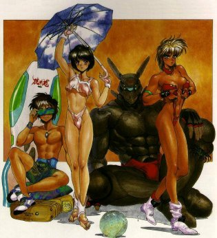

Appleseed

From the Anime Pocket Guide:
Cast:
Deunan ................................... Masako Katsuki
Hitomi ...................................... Mayumi Shoh
Athena ................................... Toshiko Sawada
Nike .................................... Kumiko Takizawa
Nereus ....................................... Tamio Ohki
Fleia .......................................... Mika Doi
Calon ................................... Toshio Furukawa
Yoshi ..................................... Yuuji Mitsuya
Description:
In the futuristic metropolis of Olympus, a terrorist action is
taking place. Handling the situation is ESWAT, a special branch
of the Olympus Police Dept. Through the tense situation, ESWAT
prepares to neutralize the terrorists. Finally, ESWAT strikes
and kill or capture all but one of the terrorists. Along the
way, we're introduced to two ESWAT members: Deunan Nut and
Briareos Hecatonchires. They are 2 outsiders who joined ESWAT
for lack of anywhere else to go. The OAV tells a story of a
terrorist plot to take over Gaia...the central computer running
Olympus. The plot involves a disillusioned ESWAT officer and
the terrorist who got away and Hitomi, Deunan's bioroid friend
who is used as a pawn to gain access to Gaia.
NOTE: The OAV is based on the manga "Appleseed" by Matsumune
Shirow. The manga is full of rich character development and
background. Unfortunately, none of this was shown in the OAV.
We got a simple police vs. terrorist story filled with lots of
action, but was pretty pointless. It was interesting to see
how many English words were misspelled, though... :-)
Other Resources
Anime Video Game Resource Center © 1998 by Luis A. Cruz